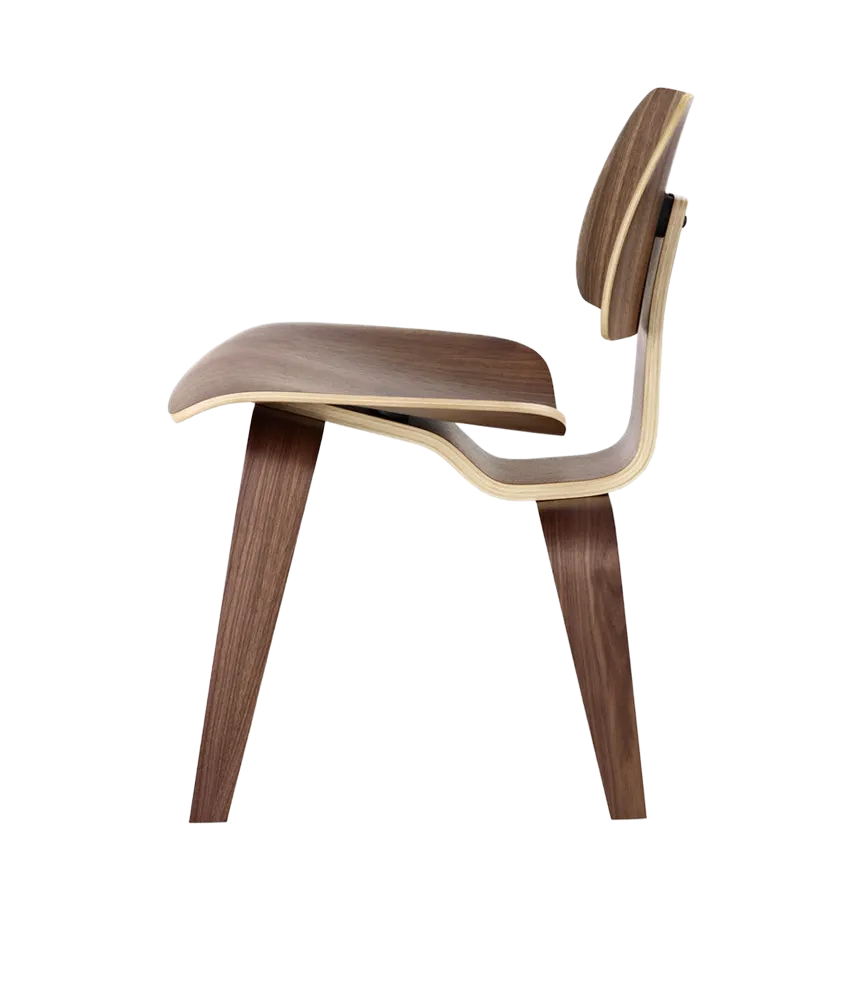
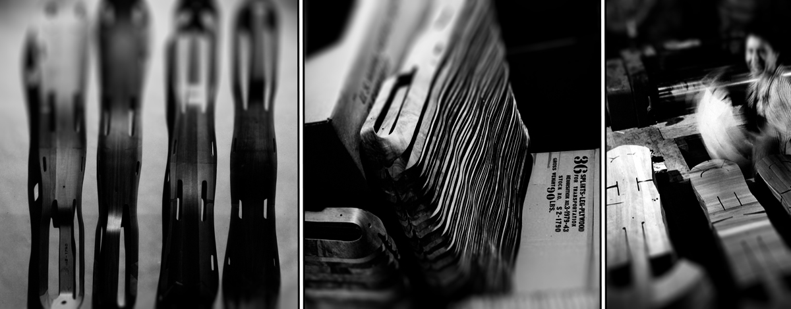
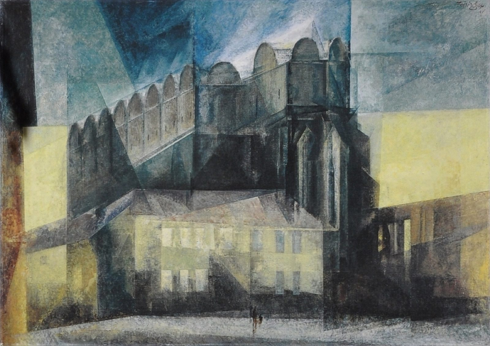

DESIGN STUDIES · SESSION 3 · OCT 1
Seven movements | six decades - Constraint | chosen or imposed
Eames 1946 · Bauhaus 1919 · Vkhutemas 1920 · OULIPO 1960 · Dogme 95 1995 · CD-ROM 1993 · Software 1985 · Dashboards 2009—
1/67
CONSTRAINT AS METHOD
EAMES 1946
“I have never been forced to accept compromises, but I have willingly accepted constraints.” — Charles Eames.

Herman Miller · Eames LCW / DCW molded-plywood chairs · product photography, hermanmiller.com
The LCW, 1946
The Molded Plywood Lounge Chair. The material constraint — the grain limits of plywood, the press itself — produced the form. The object is the argument.
2/67
CONSTRAINT AS METHOD
THE INVERSION · EAMES → IVE
Eames sculpted material to the body.
Body-first, 1946
Leg splints for the Navy, then the molded chair shells — material shaped to a measured human form as a discipline. The object serves the user's body first.
Brand-first, post-2007
The fixed form language came first; the body adapts. Antenna-gate is the clean public case — a shell chosen for looks degraded signal in an ordinary grip, and Apple's answer was “you're holding it wrong.”
3/67
CONSTRAINT AS METHOD

Apple asked the body to conform to the brand.
THE INVERSION, CONCRETELY · IPHONE 4, 2010
“You're holding it wrong.”
The iPhone 4's external antenna band looked seamless and minimal — and the ordinary palm-over-the-corner grip bridged the gap and ate the signal. Apple's public position: the user's hand was the defect.
The engineering read
A flat, palm-wide body with a metal band across the grip zone — a form language chosen for surface, then a usage story worked out around the user rather than for them.
The Eames contrast
Eames measured a human body and shaped the material to it. Here the object is fixed and the body is asked to adapt — the inversion in a single anecdote.
4/67
CONSTRAINT AS METHOD
EAMES VS IVE, CAVEAT 1998–2005
NOT A MORALITY TALE
Early Ive made real ergonomic arguments.
The iMac G3's translucent shell bundled everything into one sculpted housing; the original iPod's click wheel gave one-finger, eyes-free control. The body-first instinct was there — the pure surface language is the post-iPhone shift, not the whole Ive era.
5/67
CONSTRAINT AS METHOD
SPECULATIVE EXTENSION — AN OPEN QUESTION.
Serving the pipeline
When an object's shape follows the sensor, the cloud, the optimal information collection — the human hand becomes one input among many, not the thing the design resolves around.
Eames, inverted twice
Body-to-material becomes material-to-body, then material-to-model. The model is both physical and metaphysical. The substituted object isn't ergonomic anymore — it's a housing for data.
6/67
CONSTRAINT AS METHOD
THE TIPPING-POINT QUESTION
At some point, the consumer stops being who the system is designed for.
Where the allegiance goes
Advertisers, shareholders, model-training pipelines — every designer in software has felt the user become a constituency among others, not the client.
Session 5 callback
This is the one-line bridge: “remember the Eames/Ive tension from Session 3.” AI-assisted programming makes the same shift visible inside the toolchain itself.
7/67
CONSTRAINT AS METHOD
HANDS-ON, CONCRETE DESIGN EXPERIENCE
Hold these — feel the difference in your hand, not the specs.
Flat bodies first: the Hasselblad 500 and Mamiya Super have no molded grip — held by the whole palm. The Olympus OM-3 is Maitani's minimal-mass slab, small enough that the whole hand cups it. The Fuji X-T3 has a real sculpted grip.
What to notice
Larger hands will likely fatigue faster on the small sculpted grip than on the flat bodies — even though the flat bodies aren't lighter.
Why
A sculpted grip loads the fingers isometrically — one fixed curled position, blood flow cut off, fatiguing fast in a small zone. A flat body spreads the same or greater weight across palm and forearm.
8/67
CONSTRAINT AS METHOD
THE THEORY THE PASS-AROUND EARNS · DANIELS, 1952
Designing to an “average” fits nobody.
Gilbert Daniels audited USAF cockpits built to the “average” pilot across ten body measurements — and not one pilot matched the average on all ten. The average pilot fit nobody.
What you just felt
A grip sized for an assumed “normal” hand doesn't just feel slightly off for outlier hands — it concentrates strain in exactly the population it wasn't built for.
The fix isn't a better average
It's removing the assumption of a “typical” hand altogether — which is exactly what the grip-less flat body does.
9/67
CONSTRAINT AS METHOD
THE FRAMING SLIDE
Constraint can be chosen or imposed — either way, expert designers turn it into a durable design language.
Some movements chose their constraint; others had it forced on them by economic collapse or state decree. Either way the mechanism is the same — not working around the limit, building on it.
OULIPO chosen · literature
chosen · literature
Dogme 95 chosen · film
chosen · film
Bauhaus / Vkhutemas imposed · scarcity
imposed · scarcity
The survey ahead: Bauhaus · Vkhutemas · OULIPO · Dogme 95 · the CD-ROM bridge into software · touchscreen dashboards — six case studies, one mechanism.
10/67
CONSTRAINT AS METHOD
BAUHAUS 1919–1922
ACT I · CRAFT-GUILD ROMANTICISM
Gropius's 1919 manifesto is deliberately medieval: “Let us create a new guild of craftsmen without the class-distinctions.” The cover — a Feininger Gothic cathedral woodcut — and Itten's mystical, hand-craft-first pedagogy are the opposite of what “Bauhaus” means today.

Feininger, Der Dom — Gothic-cathedral idiom · public domain · Wikimedia Commons
11/67
CONSTRAINT AS METHOD
BAUHAUS 1923
THE FORCED PIVOT
Weimar hyperinflation hit 4.2 trillion marks to the dollar — wages carried home in wheelbarrows, a loaf of bread from 1 mark (1919) to 200 billion (1923). Gropius overruled Itten: “Art and Technology — a New Unity.” The school was going broke and needed sellable industrial designs to survive. The pivot wasn't aesthetic — it was scarcity.
Weimar, 1923: wallpapering with banknotes · Bundesarchiv · CC BY-SA 3.0 de
12/67
CONSTRAINT AS METHOD
BAUHAUS 1925–1933
ACT III · THE NEW LANGUAGE
The grammar we live inside
Tubular steel furniture (Breuer's Wassily Chair), glass curtain walls, geometric minimalism, primary colors, honesty of materials — plus a stripped single-case sans font for the school's own identity (Herbert Bayer's Universal) and weaving raised into a discipline (Anni Albers). It became the world's design language — as a mechanical adornment replacing hand-crafted ornament.
The cultural cost
The bespoke craftsperson was structurally replaced by anonymous, standardized, mass-produced design. Bauhaus first tried to save the craftsperson before scarcity forced the pivot. While this modernist language is revered in design circles everywhere, there was a real loss: Creative hand made craft replaced by metal forming machines.
13/67
CONSTRAINT AS METHOD
Marcel Breuer & Gunta Stölzl, Afrikanischer Stuhl, 1921
Marcel Breuer, Model B3 (Wassily Chair), 1925
BAUHAUS 1925–29
THE WORKS · ARCHITECTURE & FURNITURE
The Dessau building — glass curtain walls, a plan whose wings stay legible from the street, steel frame left open — completes the move Fagus first made in 1911 and hands the grammar to the International Style. The same instinct bends flat metal stock into a chair.
14/67
CONSTRAINT AS METHOD
Bauhaus building, Dessau · 1925, Gropius & Meyer · CC BY-SA 4.0
Barcelona Chair Mies van der Rohe, 1929
BAUHAUS 1925–29
THE WORKS · ARCHITECTURE & FURNITURE
Brandt's tea infuser shows its seams. Wagenfeld's lamp shows its wiring. Nothing is dressed up to look like more than what it is — the same honesty the building argues at a scale you can hold
Small objects, same rule
Brandt's tea infuser and Wagenfeld's lamp reduce familiar domestic things to their bare geometry — the same grammar at teaspoon scale.
15/67
CONSTRAINT AS METHOD
BAUHAUS 1923–25
THE WORKS · OBJECTS
After the pivot, the workshops built sellable prototypes for industry instead of one-offs for collectors — geometry stripped to what a factory could repeat at scale.
Table lamp Jucker & Wagenfeld, 1923–24 · CC BY-SA 3.0
Wassily chair Breuer, 1925–26 · CC BY-SA 4.0
Cradle Keler, 1922 · public domain
16/67
CONSTRAINT AS METHOD
BAUHAUS 1923
THE WORKS · GRAPHICS
For the 1923 Weimar exhibition the school issued a common visual system across advertising sheets and postcards — the Bauhaus head mark, flat geometric shapes, no ornament. Identity made repeatable, like the products.
Advertising sheet Schlemmer, c.1923 · CC0
Exhibition postcard Moholy-Nagy, 1923 · public domain
Exhibition postcard Kandinsky, 1923 · public domain
17/67
CONSTRAINT AS METHOD
BAUHAUS 1919–31
THE WORKS · COLOR & FORM THEORY
Shape as speech
Circle, square, triangle paired with primary hues as inherent carriers of psychological weight — a course, not a style, taught before anyone touched a product.
Curriculum before objects
The palette and the grid were the layer every workshop drew from, rather than a finish applied at the end.
18/67
CONSTRAINT AS METHOD
BAUHAUS 1920S
THE WORKS · TEXTILES
Anni Albers elevated weaving — historically dismissed as secondary to fine art — into rigorous, materially inventive design. The school funneled many of its female students into the weaving workshop regardless of stated preference: a real tension inside an institution that publicly claimed no class-distinctions between craftsmen and artists.
The gender politics, named
The workshop produced some of the school's most respected work — while functioning as the default destination for women's labor.
Same grammar
Geometric, materially honest, repeatable — the weaving joined the same mechanical-adornment language as the steel frames and glass walls.
19/67
CONSTRAINT AS METHOD
BAUHAUS 1919–1933
THE THROUGHLINE ACROSS EVERY OUTPUT
One move, applied to every material.
Take a familiar object or discipline, strip it to its structural and functional essentials, leave the underlying material and construction visible rather than disguised — and treat that visibility itself as the new ornament.
The “new mechanical adornment”
Rivets, tubular-steel joints, the exposed grid of the typography, the visible glass curtain wall — all doing the decorative work ornament used to do, honestly, out of what machine and material actually are.
The genuine cost
The bespoke craftsperson was structurally replaced by anonymous, standardized, mass-produced design. Bauhaus first tried to save the craftsperson (Act I) before scarcity forced the opposite bet — a real loss, not just progress.
20/67
CONSTRAINT AS METHOD
BAUHAUS 1925 → NOW
POSTSCRIPT · WHO INHERITS THE GRAMMAR
The honesty Bauhaus won — visible structure, nothing disguised — got dressed differently by the industry that inherited it. Rams held it as discipline at Braun (“less but better”); decades later, Apple adopted Rams's entire vocabulary.
IKEA — the constraint confesses
Flat-pack geometry is a real material constraint — shipping and assembly cost. Its minimalism is honest about the trade: cheap materials, short lifespan, bought in the open for an affordable price.
Apple — the constraint launders
Same grammar, but no scarcity behind it: glued batteries, pentalobe screws, a repair-hostile unibody are chosen decisions, not constraint. Hardware margins run 35–40% — while Foxconn survives on single digits.
21/67
CONSTRAINT AS METHOD
BAUHAUS POSTSCRIPT 2010
THE MECHANISM, MADE CONCRETE
The look is cheap to manufacture; the cost lands elsewhere.
The glued, portless, repair-hostile Apple object isn't just a look — it's a real cost-saving mechanism, and the savings have a visible destination.
Apple's hardware gross margins, company-wide — the company that sets the price.
Foxconn's operating margins — the contract manufacturer absorbing the labor cost and margin pressure required to hit that price.
The causal chain runs straight from this design choice to the labor cost. Next: where the savings actually go.
22/67
CONSTRAINT AS METHOD
BAUHAUS POSTSCRIPT 2010
THE MECHANISM'S DESTINATION
Shared differently: buybacks and dividends, not margins.
Apple's dominant use of the cash its margins capture has been shareholder returns — buybacks and dividends — rather than absorbing more of the production cost itself. The company setting the price doesn't employ the people bearing the cost of hitting it.
The 2010 toll
At least 14 deaths, 18 attempts among Foxconn workers in 2010; nets went up around the dormitories immediately, and Tim Cook, CEO from 2012, toured the factory floor that year, with reported no-suicide pledges following.
Honest complication
Thinness, rigidity, and water resistance are real engineering goals the glued build serves. The critique isn't that the logic is fake — it's that repair-hostility rides along with a version of those goals that also kills third-party repair and extends replacement cycles.
23/67
CONSTRAINT AS METHOD
BAUHAUS 1932–1933
ACT IV · CLOSURE BY FORCE
The Nazi-controlled Dessau city council closed the school in 1932; the diminished Berlin operation was shut under direct police pressure in April 1933, weeks after Hitler took power. The school's visual language — flat roofs, glass walls, exposed steel — was labeled “degenerate” and at times “Bolshevist”: a political and racial threat, not a taste disagreement.
A structurally inevitable collision
Hitler, a twice-rejected Vienna Academy painting applicant, and Speer built heroic neoclassicism at monumental scale — architecture to make the individual feel small before the state. The opposite answer to the same question: what is a building for?
Un-German, on the record
Design that makes the honest object legible is the natural enemy of design built to overwhelm the individual with state grandeur. The two aesthetics could not coexist.
24/67
CONSTRAINT AS METHOD
BAUHAUS, EXPORTED 1933→
WHY ITS INFLUENCE WENT GLOBAL
Nearly the entire senior faculty fled — and kept teaching.
Gropius, Mies, Moholy-Nagy, the Alberses, and Breuer left for the US as the ground gave way — though Mies first sought accommodation with the regime before emigrating in 1938 — and rebuilt the pedagogy here.
The paths
Albers → Black Mountain College, then Yale, carrying color theory into a new generation. Moholy-Nagy → the “New Bauhaus” in Chicago (1937), later the Institute of Design inside IIT. Gropius → chair of Harvard's GSD. Mies → IIT's architecture program and campus.
If the school had just closed
The pedagogy likely stays a German story. It became the default model for design education worldwide because its faculty were forcibly exiled into the institutions that trained the next generation of American designers.
25/67
CONSTRAINT AS METHOD
WHAT “BAUHAUS MEANT” · THREE DISTINCT CLAIMS
Not one thing — three.
1 · The teaching model
A foundational course — the Vorkurs: shared materials, form, and color before specialization — then workshop-based specialization, art and technical training under one roof. This course's own structure, and NSCAD's, descends from it directly.
2 · A new profession
“Industrial designer” became its own category — distinct from fine artist and craftsman, defined by designing for mass reproduction as the primary condition of the work.
3 · POLITICAL DEATH
Unlike the Act II pivot — economic — the closure was political. Design pedagogy influential enough to be exported by force: design schools worldwide look like Bauhaus because its teachers were driven out of the country trying to suppress it, into the country that defined 20th-century design education.
26/67
CONSTRAINT AS METHOD
VKHUTEMAS 1920–1930
IMPOSED FROM DAY ONE
Founded by Lenin's decree in December 1920, during civil war and war communism — active famine, severe shortages as the operating condition. There was no craft-romantic phase to discard; standardization-first, materials-efficient design was the founding state itself — art in direct service of state industrial production, free and open to anyone over 16.
Alexander Rodchenko — Vkhutemas master · public domain · Wikimedia Commons
The primer, Rodchenko's course: five sheets of paper, proportion 2:3, and three shapes — circle · triangle · rectangle. The same exercise runs after this section.
27/67
CONSTRAINT AS METHOD
VKHUTEMAS 1921
THE WORKS · SPACE
Rodchenko's suspended constructions — shown at the 1921 OBMOXU exhibition — build structure from intersecting planes in real space, and prefigure the workshop discipline he carried into Vkhutemas: construction before ornament.
2nd OBMOXU exhibition, Moscow, 1921 installations by Rodchenko and others · public domain
28/67
CONSTRAINT AS METHOD
VKHUTEMAS 1924
THE WORKS · TEXTILE
Popova moved from easel composition to bolt-printed cloth — the constructivist grid re-tooled for factory garments at scale. Pattern as production, geometry you could weave.
Textile design Popova, c.1924 · public domain
Fabric print, “stars in circles” Popova, c.1924 · CC BY-SA 4.0
29/67
CONSTRAINT AS METHOD
VKHUTEMAS, INVERTED 1990S–2010S
THE CONDITION, ELSEWHERE AND NOW
Does imposed constraint produce worse design than market constraint — or just a different set of failure modes? More importantly, is it a different set of success modes?
Cuba · Período Especial
Bicimáquinas, embargo engineering, Soviet appliances kept running decades past their design life — real material scarcity tied to an explicit political condition, producing ingenuity out of necessity rather than choice.
30/67
CONSTRAINT AS METHOD
~ Ernesto Oroza
Little Havana Lamp shade. Ernesto Oroza for Alejandra Von Hartz Gallery 2009.
Individuals began to assemble in their own homes machines that repeated this productive process in which hand gestures were fused with industrial technological principles.
VKHUTEMAS, INVERTED 1990S–2010S
THE CONDITION, ELSEWHERE AND NOW
Does imposed constraint produce worse design than market constraint — or just a different set of failure modes? More importantly, is there a different set of success modes?
GDR · VEB design
A state-directed design apparatus rather than a market one — the closest structural parallel to Vkhutemas itself: art in direct service of a state's industrial plan.
31/67
CONSTRAINT AS METHOD
VKHUTEMAS, INVERTED 1990S–2010S
THE CONDITION, ELSEWHERE AND NOW
What happens when scarcity becomes truly limiting?
GDR · VEB design
Despite being insular, East German government still had to deal with pressures from the West – they had to prove they could not only keep up, but do better. They couldn’t.
32/67
CONSTRAINT AS METHOD
BSS 01 game console – 1979.
Atari 2600 - 1977
Whut.
VEB, ENDED
THE CONDITION, EVER CHANGING
33/67
CONSTRAINT AS METHOD
"Boy chips at the Berlin Wall on November 12, 1989 in Berlin, Germany." (Photo by Pool CHUTE DU MUR BERLIN/Gamma-Rapho via Getty Images)
RODCHENKO'S COURSE,C.1925
FOUR-STEP DESIGN RUSH · SETUP
Five arrangements · 2:3 · three shapes.
The SVG template is on the Brightspace: a 2:3 artboard with the three shapes already placed, locked to scale proportionally. The shapes are outlines, not fills — they overlap and intersect, all three staying visible.
The rule
Three shapes only — circle, triangle, rectangle — as outlines, overlapping and intersecting rather than placed side by side. Scale and rotate freely; never distort a shape out of true form.
The rush
Duplicate the artboard five times and produce five different arrangements — Use each shape once.
34/67
CONSTRAINT AS METHOD
WHERE DO YOU FIND STRUCTURE?
Look back you your assemblages. Which do you feel is the strongest? What draws your eye to it? Does it have a life beyond just the three outlines?
35/67
CONSTRAINT AS METHOD
BOOKS! IN ALL BRANCHES OF KNOWLEDGE LENGIZ, 1924
THE DRILL'S PAYOFF, MADE VISIBLE
The same three shapes, endless possibilities.
This is where the shapes can go.
An abstract exercise in overlapping outlines is what trains the eye to see a triangle as a megaphone and a circle as a face when a real problem turns up. Even if we removed the photograph, we could still imagine a person talking.
You just did it first
36/67
CONSTRAINT AS METHOD
Books! In All Branches of Knowledge, Alexander Rodchenko, 1924
THE FOUR-STEP CLOSE · INDEPENDENT WORK
Choose one arrangement — then populate it.
Pick whichever of your five arrangements has the most potential, scale it up, and make it carry real content the way Rodchenko did — an actual image placed inside one shape, real type carried by another. Twenty minutes, unsupervised.
What the reveal just showed you
A face in the circle, a megaphone in the triangle, type bands in the rectangle — meaning assigned to the abstract shapes. Now assign yours.
The natural step-out
The translation — abstract overlap becoming a real communicative decision under time pressure — is the whole exercise. Nothing needs to be polished.
37/67
CONSTRAINT AS METHOD
OULIPO 1960
CHOSEN CONSTRAINT · IN LITERATURE
“Oulipians are rats who construct the labyrinth from which they plan to escape.” — Queneau.
La Disparition, 1969
A ~300-page novel that never uses the letter e — in French, and in Gilbert Adair's English translation too. The missing letter is the whole generative structure.
Cent mille milliards de poèmes, 1961
Ten sonnets with interchangeable line-strips: 10^14 possible poems from one physical book. Structure as combinatorial engine.
Cent Mille Milliards de Poèmes — cut-strip line-swap book · CC BY 2.0
38/67
CONSTRAINT AS METHOD
OULIPO 1969
A LETTER, FORBIDDEN
A ~300-page novel that never uses the letter e.
Perec's La Disparition is a lipogram — published in French, and in Gilbert Adair's English translation as A Void , also without e . The missing letter is the whole generative structure.
The reading, offered as interpretation
Perec was Jewish and orphaned by the Holocaust — his father killed in 1940, his mother deported to Auschwitz and murdered; some scholars read the e -less novel as entangled with that absence and loss. That's an interpretive reading, not a stated claim — worth carrying as such.
The move, in design terms
The restriction isn't decoration around a finished text — it's the engine that produces every sentence.
39/67
CONSTRAINT AS METHOD
OULIPO, INHERITED 2010S
THE CONSTRAINT ECONOMY, REWOUND
The rat-and-labyrinth is now a design-tool staple.
The 100-days challenge
dailyui-style daily prompts are Queneau's move inherited wholesale — pick an arbitrary daily rule, let it force the output. Many of you may have done one without knowing the lineage.
Fantasy consoles
PICO-8 and TIC-80 hard-code resolution, palette, and memory limits — a genre unto itself in game jams. Software constraint operating exactly like a hardware limit, without the hardware. Keep this one for the build.
40/67
CONSTRAINT AS METHOD
OULIPO, INHERITED 2010S
THE CONSTRAINT COMMUNITY, UNBOUND
Cutting edge can be jagged graphics.
41/67
CONSTRAINT AS METHOD
PICO-8 is a walled garden just like Nintendo. But the cost of entry is far lower. And Higher.
The ecosystem is based on “cartridges”
Games are encoded into the PNGs that make the game thumbnails
Designers work within punishing constraints
Games become explorations of the essence of games
128×128 resolution
fixed 16-color palette
8,192 tokens*
DOGME 95 1995
CHOSEN CONSTRAINT · IN FILMMAKING
von Trier and Vinterberg had full budgets and effects available — and refused them on principle.
Dogme 95 certificate, No. 28 — Open Hearts · CC BY-SA 4.0
42/67
CONSTRAINT AS METHOD
The Celebration (1998) by Thomas Vinterberg
DOGME 95 1995
THE VOW OF CHASTITY, IN FULL
Ten self-imposed rules — the entire manifesto.
01
Filming must be on location — no sets, no props brought in
02
Sound must never be produced apart from the images — no post-production sound design or added score
03
The camera must be hand-held
04
The film must be in color, with no special lighting
05
No optical work or filters
06
No surface action — murders, weapons, and so on
07
No temporal or geographical alienation — the film takes place here and now
08
Genre movies are not acceptable
09
Film format must be Academy 35mm
10
The director must not be credited
43/67
CONSTRAINT AS METHOD
DOGME, REINVENTED 1980S–2010S
PARALLEL INVENTION, NOT LINEAGE
The same refusal, same message, different medium.
Demoscene & chiptune
Music and visuals on deliberately primitive hardware — Amiga and C64 cracking-scene culture. It predates Dogme by close to a decade: convergent, not descended.
Brutalist web design
Raw, unstyled HTML as a reaction to corporate UX bloat — its stated lineage runs through architectural brutalism and anti-corporate sentiment, not film theory. Same pattern, independent roots.
44/67
CONSTRAINT AS METHOD
DOGME, REINVENTED 1980S–2010S
WE LIKE TO CLICK. WE WANT FRESH.
NeuBrutalist web design
Fashion raw that riffs on the elements of brutalism, while keeping things dynamic, in your face, and feely extra edgy. Ooo Punk.
45/67
CONSTRAINT AS METHOD
THE BRIDGE INTO SOFTWARE
CD-ROM retail case · eBay listing photo
The CD-ROM encyclopedia is a hinge: a disc you hold, whose whole internal design problem is pure information — it was a cutting edge consumer product working inside it’s own constraints.
46/67
CONSTRAINT AS METHOD
CD-ROM 1993–2009
A HARDWARE CEILING OVER PURE INFORMATION
Constrained by fixed disc capacity rather than bandwidth — every video, audio clip, and frame rationed to fit before the disc is pressed, with no post-release update possible.
A fixed ceiling written before the disc is pressed — everything compressed to fit. No post-release update possible.
Full-motion video was rationed hard in favor of short compressed clips and stills with narration — curation as the product.
47/67
CONSTRAINT AS METHOD
ENCARTA 1993–2009
HARD-CEILING LOGIC, COMMERCIAL THIS TIME
The ceiling did the editing.
Everything had to be compressed and rationed before the disc was pressed: video into short clips, audio into narration-plus-stills. Curation became the product itself.
Vkhutemas's cousin, apolitical
The same “hard ceiling forces curation” logic — but commercial, no ideology attached. Rationed by technology limitations dictating capacity, not by decree.
Cheaper read as more considered
Fewer, better-chosen entries read as editorial care — the same inversion the dashboards will make literal: the ceiling becomes the tone.
48/67
CONSTRAINT AS METHOD
SOFTWARE CONSTRAINT 1985–2016
A DISTINCT FLAVOR OF THE SAME MECHANISM
None of these limits were anyone's aesthetic choice at the time. Monitors, network protocols, memory, and screen geometry imposed them — and designers turned each into a recognizable language.
140 → 160
A network protocol's character budget became a genre of compression.
216
A palette born of monitor and bandwidth limits defined the early web's look.
4 SHADES
Game Boy's green monochrome is Yokoi's withered technology, made identity.
1:1 & 9:16
A square default and a vertical short frame now shape pacing and composition.
49/67
CONSTRAINT AS METHOD
SIERRA ON-LINE · 1986
SOFTWARE CONSTRAINT · GAMES
Sierra Online was at the forefront of game design. Technology always constrained what they were able to accomplish, but it’s arguable that talented creative approaches resulted in stronger products, and placed the studio squarely as an important part of video game history.
The evolution of Roge Wilco
50/67
CONSTRAINT AS METHOD
SIERRA ON-LINE · 1986
SOFTWARE CONSTRAINT · GAMES
Space Quest I ran on Sierra’s AGI engine: CGA graphics, a fixed four-color palette, and a text parser. Ulence Flats’ magenta sky and yellow sand aren’t a style choice — they’re what CGA’s composite mode could physically display.
Space Quest: The Sarien Encounter (DOS, 1986) · escaping Ulence Flats · MobyGames
51/67
CONSTRAINT AS METHOD
SIERRA ON-LINE · 1989
SOFTWARE CONSTRAINT · GAMES
By Space Quest III, Sierra had EGA — sixteen colors from a palette of sixty-four. Artists dithered adjacent colors pixel by pixel to fake gradients the hardware didn’t have. Arnoid’s face is the workaround becoming a house style.
Space Quest III: The Pirates of Pestulon (DOS, 1989) · dithered EGA shading · MobyGames
52/67
CONSTRAINT AS METHOD
EGA Palette, Wikimedia Commons
SIERRA ON-LINE · 1991
SOFTWARE CONSTRAINT · GAMES
Space Quest IV shipped in full VGA: 256 colors, Sierra’s new SCI1 engine. Then Roger flashes back to Ulence Flats — and the game flattens to the old CGA look: “You’re a VGA man stuck in an EGA world... Boy, I remember this place!”
Space Quest IV: Roger Wilco and the Time Rippers (DOS, 1991) · full 256-color VGA · MobyGames
53/67
CONSTRAINT AS METHOD
Space Quest IV: Roger Wilco and the Time Rippers (DOS, 1991) Ulence Flats Scene
DOGME 95 2020
THE LOGIC THAT RETURNS IN SOFTWARE
“We chose not to have this capability.”
Dogme's refusal isn't a lack of access — it's a positioning move. The same sentence appears wherever pixel art outlives its hardware limit: nobody is forcing it, the restriction is kept on purpose, and it reads as authorship.
54/67
CONSTRAINT AS METHOD
City of Human: Hattori Graphics, 2020
Pixel art is not exhibiting the same foundation as electronic brutalism. It is more akin to the limitation based framework of Dogme 95
[the photograph] exists alongside a vast amount of information - the subject, the lens, the image sensor, the light, the aperture, the shutter speed, the file format, whether it’s been retouched. On the other hand, no matter how intently you examine most pixel art, there is nothing hidden.
~Shingo Kabaya (Hattori Graphics)
NES / GENESIS · 1985–1994
SOFTWARE CONSTRAINT · GAMES
NES and Genesis artists dithered for a display that would blur their work for them. Composite video encodes color as a subcarrier signal, and a CRT smears adjacent pixels together decoding it — so a checkerboard of two colors reads on-screen as a third color that was never actually drawn.
55/67
CONSTRAINT AS METHOD
WEB-SAFE PALETTE C.1996
BORN OF HARDWARE, READ AS STYLE
A palette that never expressed a personal taste.
“Web-safe” colors existed purely because early monitors and bandwidth couldn't reliably reproduce anything else — 6×6×6 levels of RGB. It defined the look of the early web.
56/67
CONSTRAINT AS METHOD
GAME BOY 1989
THE YOKOI CROSS-REFERENCE
Four shades of green made an identity.
Yokoi deliberately chose mature, cheap LCD tech when rivals chased color — “lateral thinking with withered technology.” The four-shade green became the visual memory of an entire platform generation.
A preview of Session 4
Next week: a company that builds an entire design philosophy out of self-imposed constraint. This is its palette, before you've met the philosophy.
Limit → language
The same four shades forced bolder, simpler visibility — constraint read as character, not cutback.
57/67
CONSTRAINT AS METHOD
SMS → TWITTER 1985 / 2006
THE CHARACTER-LIMIT PAIR
SMS's 160 invented the tweet's 140.
Cell networks budgeted 160 characters to fit signaling overhead; Twitter inherited the protocol's logic and cut twenty more for the username. A transmission constraint became a genre — compression as voice.
SMS's ceiling — the network protocol that shaped everything that followed.
Reserved for the username on top of the SMS logic — a limit layered on a limit.
58/67
CONSTRAINT AS METHOD
INSTAGRAM · TIKTOK 2010 / 2016
THE FRAME AS AN ENFORCED DEFAULT
A square crop and a 9:16 frame taught two generations to compose.
Instagram's 1:1
The original square-only crop was a constraint of the feed — and it made a whole era of photography square-first, balanced, immediate.
TikTok's 9:16 + seconds
A portrait frame held in one hand, and a short clock counting down — the canvas and the meter shape pacing and framing, not just the look.
59/67
CONSTRAINT AS METHOD
TOUCHSCREEN DASHBOARDS 2009–
THE ORIGIN CASE · TESLA 2009 MODEL S
One glass panel replacing dozens of controls — cost, plus a second motive.
Centralizing nearly all controls into one touchscreen can be seen as a manufacturing cost cut, structurally identical to Yokoi's cheap-LCD bet, but inverted in feeling.
Where it's identical to Yokoi
A cheaper manufacturing path, chosen. Same move as the Game Boy.
Where it differs
Yokoi marketed practicality — price, battery, library. Dashboards also signal modernity: the flat panel isn't just cheaper, it performs as premium and futuristic. Two motives at once, not constraint alone.
Tesla Model S interior — the single glass panel · photo: Jim Motavalli / Car Talk
60/67
CONSTRAINT AS METHOD
TOUCHSCREEN DASHBOARDS 2009–
THE INVERSION, STATED ALONE
A dashboard with fewer buttons, dials, and gauges should feel like the cheaper, stripped-down option. Instead, it reads as nicer trim. The look of luxury isn't a side effect of expensive engineering here — it's the mechanism that lets the cost-cutting go unnoticed.
Tesla Model 3 vs. 1958 Cadillac Eldorado Seville
61/67
CONSTRAINT AS METHOD
TOUCHSCREEN DASHBOARDS 2009–
THE ARGUMENT MADE LITERAL AND SAFETY-CRITICAL
By feel, gone.
A driver adjusting airflow at 100km/h once operated a control by feel alone. Now it's a laggy touch target a glance-and-a-poke away from the road — attention-splitting input on a control that used to be hands-free.
Most of the room has lived this
A recent-model rental, an unfamiliar cabin, a heat dial behind a submenu — the touch-vs-sight failure is common, current, and personal.
62/67
CONSTRAINT AS METHOD
THE WALK BACK 2024–
PRODUCTS REVERSE THE CUT
The all-touch cabin was a cost cut with a safety floor — the ID.3 ran heat, volume, and lights all behind one laggy screen. VW's 2024 ID.2all concept puts physical “hot buttons” back, backlit and one-touch, no menus — Hyundai keeps hard controls a brand promise, and Apple restored physical buttons on the iPhone 16 and function keys on the MacBook. Constraint, reversed.
ID.3, 2021 every control behind a touchscreen · photo: Parkers / Bauer Media · parkers.co.uk
ID.2all, 2024 “hot buttons” return · photo: Volkswagen via Motor1 · motor1.com
63/67
CONSTRAINT AS METHOD
HAND MADE CIRCUITS · TODAY
A Weevil Eye board doesn’t hide its own mechanism — the case doesn’t exist. The chip, the resistors, the joints are the face. It’s Bauhaus’s honest-materials logic sitting in your hand instead of argued in a lecture.
You’re not Vkhutemas here — you’re closer to a GDR kid building a Plasticart kit. Someone else already closed the design decisions; the only thing left to you is whether you pick up the iron.
64/67
CONSTRAINT AS METHOD
CROSSING BACK ACROSS ALL SIX
Bauhaus, Vkhutemas — even Yokoi's Game Boy — turned material and economic scarcity into lasting design languages. OULIPO and Dogme 95 invented their own rules with no external pressure at all. The mechanism is identical.
Yokoi is the throughline that returns next week — a company that builds an entire design philosophy out of self-imposed constraint. Same move, chosen register.
65/67
CONSTRAINT AS METHOD
TO CONSIDER:
A Dogme director can always pick up a dolly again; a writer can stop lipogramming. Cuba in the Período Especial, the GDR's Plasticart model kits, Vkhutemas's own students — nobody involved had the option to opt out. Does “constraint improves design” survive once inescapability replaces the exit?
66/67
CONSTRAINT AS METHOD
ON TO SESSION 4
Yokoi's Nintendo turns the whole survey into an operating philosophy.
After the break · Hand Made Circuits
67/67
CONSTRAINT AS METHOD